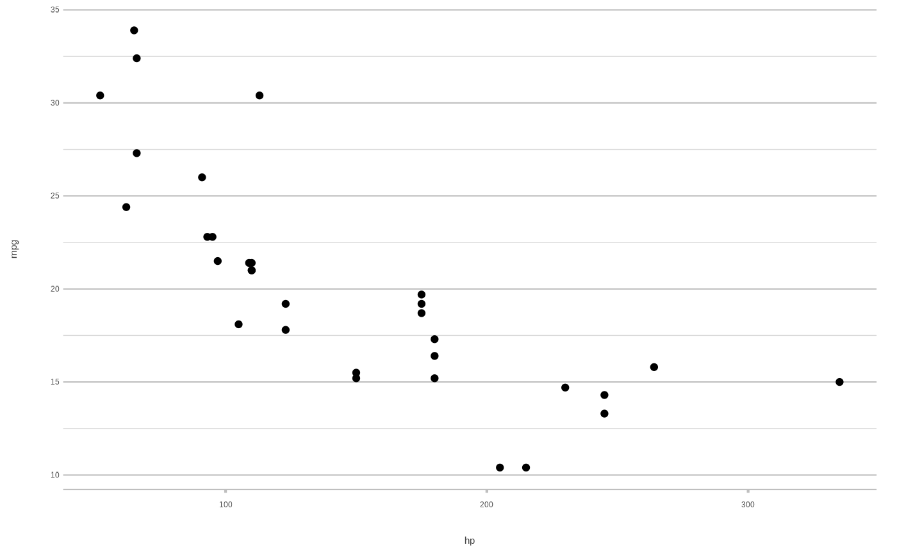
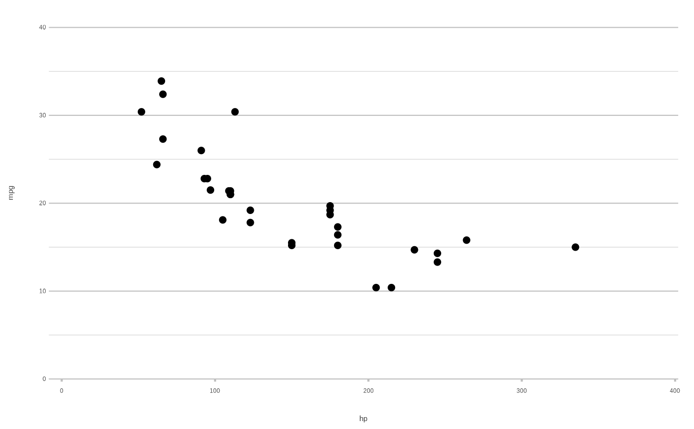

This ggplot2 theme provides even more white area and less clutter than theme_minimal().
Usage
theme_minimal2(
...,
colour_font_primary = getOption("plot2.colour_font_primary", "black"),
colour_font_secondary = getOption("plot2.colour_font_secondary", "grey35"),
colour_font_axis = getOption("plot2.colour_font_axis", "grey25"),
colour_background = getOption("plot2.colour_background", "white")
)Arguments
- ...
arguments passed on to
ggplot2::theme()- colour_font_primary
colour to set for the plot title and tag
- colour_font_secondary
colour to set for the plot subtitle and caption
- colour_font_axis
colour to set for the axis titles on both x and y
- colour_background
colour to set for the background
Examples
library(ggplot2)
ggplot(mtcars, aes(hp, mpg)) +
geom_point()
ggplot(mtcars, aes(hp, mpg)) +
geom_point() +
theme_minimal2()

# in plot2(), the 'theme' argument defaults to theme_minimal2():
mtcars |>
plot2(hp, mpg)
#> [1] "data.frame"
#> i Using type = "point" since both axes are numeric

# set to NULL to use the ggplot2 default:
mtcars |>
plot2(hp, mpg, theme = NULL)
#> [1] "data.frame"
#> i Using type = "point" since both axes are numeric